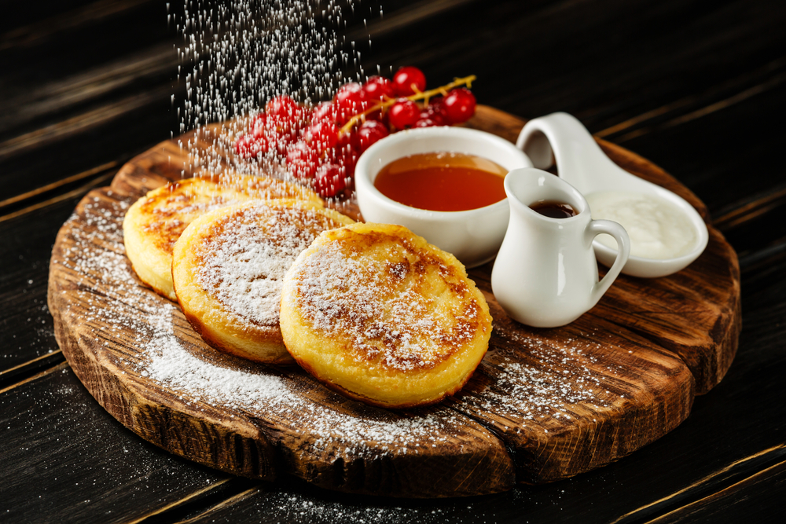

Syrnyky (Ukrainian Cheese Pancakes)

Description
Often called a Ukrainian analogue of cheesecake, syrnyky are roasted pancakes, made of home cheese, flour, eggs as well as salt and sugar. Syrnyky are definitely one of the best sweet dishes in Ukraine. Known since the 18th century and popular in all regions of Ukraine, syrnyky can be both sour and sweet, depending on the serving. For sour syrnyky, Ukrainians usually add more salt in the mix and serve them with sour cream. The sweet ones can be topped with sugar powder, honey, and various jams. source
Ingredients
- 400 grams farmer cheese
- 2-3 tbsp all-purpose flour (and some more for coating)
- 2 tbsp sugar
- 1 pinch vanilla
- 1 pinch salt
- 4 tbsp oil
How to Make Syrnyky
- Preheat oven to 400°F. Line a pan with parchment paper.
- In a large mixing bowl, add measured farmer cheese, sugar, 2-3 tablespoons of flour, salt, egg yolk and vanilla extract. Mix everything with the fork until well combined.
- Sprinkle 2 tablespoons of flour on a cutting board, or a table. Flour your hands well and form the roll resembling a large burrito. Place the roll on a cutting board and coat it with the flour. Cut the roll into 6-7 thick pieces. Lay them on a flat side, flatten little bit with hands and dredge with flour. Flip and repeat. Leave syrnyky at least 1 inch thick.
- Preheat pan over medium heat, add butter. When butter is hot, lay pancakes carefully and fry for about 1-2 minutes on each side until golden brown crust appeared.
- Transfer syrnyky on a prepared pan and bake for 7-8 minutes. Serve hot with a dollop of sour cream, jam or berries.
Notes
- if syrnyky start falling apart when frying, add more flour
- the dough will be sticky and very soft. It will be tempting to add more flour. But if you are able to from a roll on a table (you will not need too much pressure, because the dough will be super soft), no need to add more flour.
- it's easier to form the roll on the surface. It will stretch and break if you do it in the air.
- make sure to coat each pancake with flour well
source